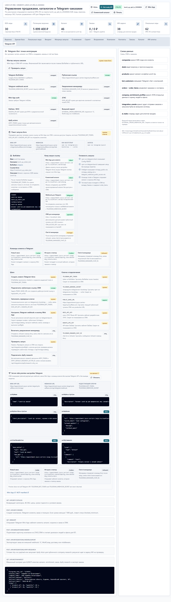

Что проверять
Source repo, Telegram setup artifact и подробную страницу с voice-to-CJM pipeline, Mini App, HTML и Excel.
Project proof page
Voice-first Telegram bot для превращения голосовых заметок в CJM, структурированные выводы и следующий шаг для продукта или продаж.

Source repo, Telegram setup artifact и подробную страницу с voice-to-CJM pipeline, Mini App, HTML и Excel.
Упаковка голосового входа в понятный business/customer journey output.
Голосовая заметка перестает быть хаосом и становится материалом для решений.
Если human говорит голосом, агент должен вернуть структуру, а не просто transcript.